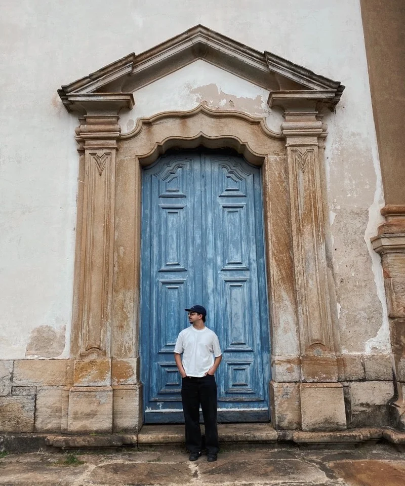

CRIO MARCAS COM
CONCEITO, IMPACTO
E CONSISTÊNCIA
Estes são os principais serviços que ofereço, cada um deles foi pensado para atender às diferentes etapas do processo de construção de marca, da estratégia à expressão visual, garantindo relevância e consistência no mercado.
PRAZER ME CHAMO...
OLÁ, EU SOU O GUSTAVO GARROCHO
Sou estudante de Publicidade e Propaganda na PUC Minas, designer e estrategista de marcas. Comecei minha trajetória no mercado de forma prática, atuando com edição de vídeos, gestão de anúncios e web design, até direcionar todo o meu foco para a criação de identidades visuais e estratégia de marca.
Me defino como um profissional nexialista, alguém capaz de conectar pontos entre estratégia, estética e visão de negócio onde outros enxergam apenas partes isoladas. O bastidor da criação pode ser denso e analítico, mas a conversa com você será sempre simples, clara e direta.

ETAPAS DO PROJETO
Um processo estruturado de construção criativa que conduz a marca da estratégia inicial até a entrega final dos arquivos:
ANÁLISE
Preenchimento da Análise Estratégica para compreender o contexto da marca, seus objetivos, desafios conceituais e predileções estéticas.
ONBOARDING
Reunião de alinhamento estratégico para aprofundar os dados coletados no briefing, esclarecer dúvidas e alinhar expectativas para a criação.
CRIAÇÃO
Construção visual da marca baseada em pesquisa, conceito central, prototipagem técnica e validação em contextos reais de uso.
APRESENTAÇÃO
Reunião imersiva (1 a 2 horas) para compartilhar todas as decisões técnicas e conceituais que deram forma à marca e suas aplicações.
ENTREGA
Entrega completa de todos os arquivos exportados nos formatos adequados, organizados por hierarquia visual e disponíveis por 1 ano.
PROJETOS SELECIONADOS
Estudos de caso reais de posicionamento e identidade visual sincronizados com nosso portfólio no Behance.
SERVIÇOS
A criação de marca consiste na junção estratégica entre Estratégia de Marca e Identidade Visual, podendo integrar novos entregáveis conforme a necessidade do projeto:
ESTRATÉGIA DE MARCA
Desenvolvimento estruturado em três pilares fundamentais (Investigação, Estratégia e Universo Verbal): Big Idea, posicionamento estratégico, proposta de valor, missão / visão / valores, território de marca, personalidade e tom de voz, arquétipo de marca, público-alvo e narrativa de marca (brand storytelling).
IDENTIDADE VISUAL
Logotipo e variações, símbolo, paleta de cores institucional, sistema tipográfico, grafismos e elementos de apoio visual.
EXPRESSÃO DIGITAL & COMUNICAÇÃO
Linguagem e expressão gráfica de marca para o ambiente digital, templates editáveis para redes sociais (Instagram) e direcionamento de linguagem fotográfica.
SITES
Projetação e desenvolvimento de plataformas digitais de alta conversão, de landing pages a sites institucionais, unindo arquitetura de informação, UX/UI design e integração low-code para uma presença web funcional, rápida e alinhada ao posicionamento da marca.
RÓTULOS E EMBALAGENS
Design de rótulo e embalagem principal (SKU master), adaptações e variações, construção da faca gráfica (dieline), definição de materiais, acabamentos, mockups 3D e arquivos para gráfica/digital.
GESTÃO DE ANÚNCIOS
Planejamento, estruturação e otimização de campanhas de anúncios pagos (Meta Ads) para direcionar público qualificado, gerar demanda real e conectar a marca ao mercado com eficiência comercial.
ENTREGÁVEIS INSTITUCIONAIS & COMPLEMENTARES
Papelaria Institucional / Itens Gráficos de Comunicação / Enxoval Delivery para Food / Enxoval Unboxing para E-Commerce / Apresentação Institucional.
VAMOS ELEVAR O NÍVEL?
Que tal tirar suas dúvidas comigo e começarmos os trabalhos? Clique no botão abaixo e me fale como posso te ajudar! :)